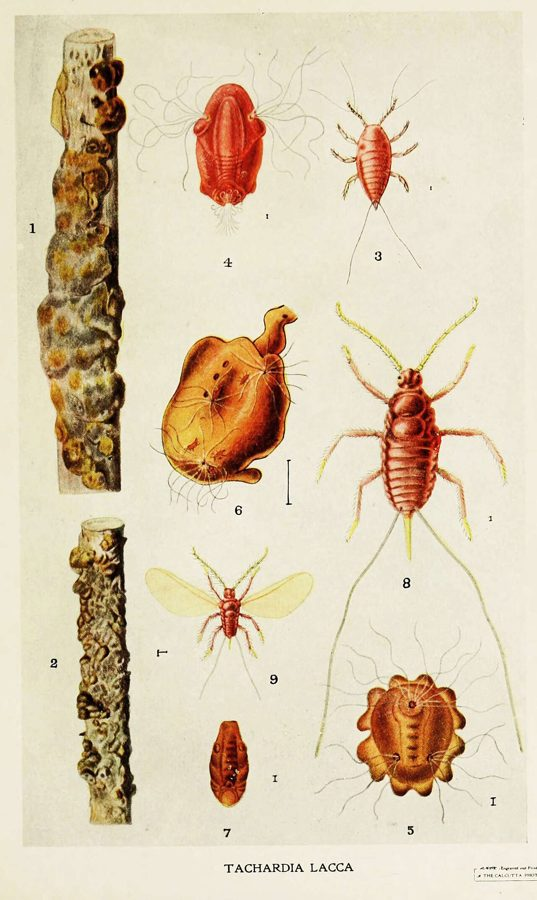

लाख का कीड़ाLac Insect
Kerria lacca · Lacciferidae · INS-0085

- Scientific nameवैज्ञानिक नाम
- Kerria lacca (Kerr, 1782)
- Familyकुल
- Lacciferidae
- Hindiहिंदी
- लाख का कीड़ा
- Local namesस्थानीय नाम
- lakh ka kida, rangeeni, sticklac, shellac
- Status hereयहाँ की स्थिति
- native
- Movementआवागमन
- Resident, here all year
- IUCNIUCN
- not evaluated
- Reviewसमीक्षा
- audited and independently read
When to look कब देखें
Present all year.साल भर मौजूद।
Uses and possibilities उपयोग और संभावनाएँ
“Traditional medicine” means a documented traditional use, not a claim that it works. Nothing on this page is medical advice.
Drawn from the documented uses in the profile below, where each is labelled traditional, current or a research lead. All uses →
लाख का कीड़ा / Lac Insect
Kerria lacca (Kerr, 1782) — Lacciferidae
लाख का कीड़ा — झाड़ियों पर लाल रंग की मोटी पपड़ी, जिसे लाख कहते हैं, वह इसी छोटे कीड़े की खोल है। माँ पेड़ की शाख पर बैठकर रस चूसती है और अपने चारों तरफ़ एक गाढ़ा राल (लाख) का कोट बनाती है। यह लाख ही आभूषण, बिंदी, रंग, वार्निश सब में लगती है। ईख की शाख पर लाख पालते हैं तो एक साल में हज़ार ईख से एक किलो लाख मिल जाती है। हज़ारों साल से लाख का व्यापार चलता आ रहा है।
Quick Identification त्वरित पहचान
| Feature | Description |
|---|---|
| Lac coating | Resinous, brittle, red to brownish-red, encrusting twigs |
| Form | Thick continuous layer on twig ("sticklac"); or individual females embedded in resin |
| Shape | On twigs, forms a cylindrical or flattened crust, 1–2 mm thick |
| Density | Twig may be so densely covered that the bark is invisible |
| Adult female colour | Pale yellow, embedded in resinous layer; not visible from outside |
| Nymphs | Reddish-yellow, crawling on twig before settling |
| Exuviae | Cast skins visible on the lac surface |
| Host preference | On Indian Jujube, Palash, Kusum, and many other tree species |
Field tip: On Kusum, Indian Jujube, or Palash in spring (March–April), look for red to brownish encrusting on twigs. The twig appears swollen. Scrape the lac off: it is hard, brittle, and comes away in flakes. Inside you may see pale insects embedded in resin.
हिंदी — कैसे पहचानें: पेड़ की शाख पर लाल गहरे रंग की मोटी, कड़ी पपड़ी। शाख सूज गई होगी। नाख़ून से खुरचो तो लाल दाने टूटेंगे।
Morphology आकारिकी
Biometrics:
| Measurement | Range |
|---|---|
| Adult female body length | 4–8 mm |
| Lac crust thickness on twig | 1–2 mm |
| Nymph (crawlers) | 0.5–1 mm, reddish-yellow |
| Male (rare) | 2–3 mm, winged, short-lived |
| Lac production per female (season) | 200–300 mg |
| Brood size (nymphs per female) | 200–400 |
Adult female: Oval to rounded, yellow-orange to pink, with a small proboscis inserted into the twig. The body is soft, flat, and entirely embedded in resinous secretion. No wings; the female remains sedentary for her entire adult life, feeding and laying eggs on the twig.
Male (rare in natural populations): Winged, small, short-lived; produced only to fertilise females in the final generation of the season. Functionally absent in cultivated lac populations, which reproduce parthenogenetically.
Nymph: The first-instar nymph (crawler) is tiny, reddish-yellow, mobile, and moves along the twig seeking a suitable feeding site. Once it settles, it begins secreting resin and remains sedentary.
Resinous coating (lac): Secreted from specialised glands in the body of the female and nymphs; accumulates on the twig and entirely encloses the insect population. The resin is complex, consisting of polyterpenes, esters, and other compounds that give it hardness, colour, and solubility properties valued in commerce.
हिंदी: पीला-गुलाबी कीट, नरम। पेड़ की शाख में सुई जैसी चोंच डली रहती है। लाख बनाती है, जिसमें बैठा होता है। माँ कभी उड़ नहीं उड़तीं।
Behaviour & Ecology व्यवहार और पारिस्थितिकी
The lac insect is a sedentary scale insect that secretes a protective resinous coating as it feeds on plant phloem. A female spends her entire adult life on a single spot on a twig, surrounded by her own secretion. The resin serves multiple functions: it protects the insect from predators and weather, it prevents desiccation, and it accumulates to form harvestable lac. Nymphs are born on the twig; they crawl for a brief period, settle nearby, and repeat the cycle.
The insect has a complex life history with overlapping generations. In the Indian subcontinent (and the region where it is cultivated), two main crops are harvested annually: the summer crop or kusmi lac (March–June) and the winter crop or rangeeni lac (September–November). Between harvests, the population regenerates. The insect shows no dormancy; it feeds and breeds year-round on perennial hosts, though activity varies with temperature and host phenology.
Naturally, the lac insect infests over 300 plant species including Indian Jujube, Palash, Kusum, mango, neem, and many others. On wild hosts, it is a minor component of the ecosystem, rarely becoming economically damaging. It has been domesticated and cultivated for well over two thousand years (the house of lac, lākṣāgṛha, of the Mahabharata is the oldest famous reference), making it one of the few insects farmed commercially at a large scale. The host trees Indian Jujube, Palash, and Kusum are planted and managed specifically for lac cultivation in parts of India; the ecosystem benefits are substantial, as these are native trees that also provide fodder, fuelwood, and food.
हिंदी: पेड़ की शाख पर सारी ज़िंदगी बैठा रहता है, रस चूसता है, लाख बनाता है। साल में दो बार फ़सल लेते हैं। सदियों से पाले जाते हैं।
Life Cycle / Phenology जीवन चक्र
| Stage / season | Event |
|---|---|
| Egg, 5–8 days | Laid within female's body; develops viviparously |
| Nymph crawler, 2–4 days | Moves on twig; settles on suitable feeding site |
| Settled nymph, 20–30 days | Secretes resin; feeds; grows |
| Adult female, 1–2 months | Laying eggs continuously; surrounded by resin |
| Male (occasional) | Winged, emerges, mates, dies within days |
| Kusmi lac crop (summer) | March–June; generation on young twigs and branches |
| Rangeeni lac crop (winter) | September–November; denser resin; finer colour |
| Fallow period | July–August and December–February; reduced activity |
हिंदी: अंडा 5–8 दिन, निम्फ़ 2–30 दिन (सैटल होने का समय), वयस्क 30–60 दिन। गर्मी और सर्दी में दो फ़सलें।
Host Plants or Prey आहार
Preferred and economically important hosts (for lac cultivation):
- Ber (Ziziphus mauritiana) — primary host in eastern India
- Palash (Butea monosperma) — traditional host in western India
- Kusum (Schleichera oleosa) — preferred in central and southern India
- Neem (Azadirachta indica)
- Mango (Mangifera indica)
Over 300 plant species are natural hosts; the insect is highly polyphagous but shows strong preference for the above five.
Predators / Natural Enemies शत्रु
- Parasitoid wasps: Ooencyrtus lacai, Arrhenocoelus ater, Aenasius vexans (major parasitoids of lac insects; some are conserved or cultured)
- Predatory beetles: leaf beetles, ladybirds; feed on nymphs and emerging adults
- Predatory bugs: Rhinocoris and other reduviids; attack all stages
- Spiders: jumping spiders and hunters
- Ants: some species farm the lac insect and protect it from natural enemies (mutualistic relationship)
- Entomopathogenic fungi: Beauveria, Metarhizium (rarely relevant in field conditions)
Agricultural / Human Relevance कृषि प्रासंगिकता
Craft, trade and cultural history. Lac is the resinous secretion of Kerria lacca, harvested, processed, and used as a dye, varnish, polish, adhesive, and cosmetic ingredient for well over two thousand years (the house of lac, lākṣāgṛha, of the Mahabharata is the oldest famous reference). The Sanskrit texts mention lac as laksha; medieval Arabic and Persian manuscripts recorded lac trade across the Indian Ocean. The trade persists today: India produces 15,000–20,000 tonnes of lac annually, exporting to Japan, USA, and Europe. Lac remains central to Hindu ceremonial life (tilak, religious dyes) and traditional Ayurvedic medicines.
Documented traditional uses (with ethnobotanical sources):
- Dye: Lac yields a brilliant red colour (from insect-derived compounds, particularly from the female's body and the secretion). Historically used for textile dyeing across South Asia; documented in medieval texts and trade accounts (Chakraborti et al. 2009). Still used in natural dye industries.
- Craft and ornament: Processed lac (shellac) is moulded, coloured, and shaped into bangles, beads, ornamental objects, and jewellery. The craft is traditional in Ber-growing regions of Rajasthan and central India, described in colonial-era gazetteers and continued today. Lac bangles are worn ceremonially, particularly in Bengali and Bihari traditions.
- Varnish and polish: Lac dissolved in alcohol forms shellac, a traditional wood varnish and polish documented in furniture-making traditions of northern India since at least the Mughal period.
- Adhesive: Hardened lac has been used as an adhesive and sealing material in traditional applications.
Research direction (a lead, not a result). Genetics and breeding of lac insects for improved resin quality and yield; host-plant genetic variation and its effects on lac colour and productivity; restoration and management of native host trees (Indian Jujube, Palash, Kusum) for both biodiversity and lac production; chemical composition of lac resins and bioactivity of lac-derived compounds (Vaya & Mahmood 2006; Goel et al. 2012). The intersection of traditional lac craft knowledge, agroforestry systems, and ecological conservation.
हिंदी: लाख के बिना कोई शादी नहीं — बिंदी, चूड़ी, रंग। हज़ार साल से पालते हैं। Indian Jujube और Palash लगाना मतलब लाख भी, हरियाली भी, चारा भी।
Expected Locally स्थानीय रूप से अपेक्षित
Not a field record. Written from published accounts for eastern Uttar Pradesh and the Indian subcontinent. Lac cultivation is documented in UP; wild lac occurs on scattered host trees in the region.
अभी तक स्थानीय पुष्टि नहीं। यह विवरण प्रकाशित स्रोतों से है।
Expected on Indian Jujube, Palash, Kusum, and other suitable host trees throughout Basti district, year-round, though populations and lac accumulation vary seasonally. Lac is harvested commercially in some regions of India; eastern UP has historically produced lac but the industry has declined. A photograph of sticklac on Indian Jujube, Palash, or Kusum branches, with date and location, would confirm a local record.
Distribution वितरण
Global range: Tropical Asia, from the Indian subcontinent to Southeast Asia and China. The insect is now cultured in India, China, Thailand, and other tropical countries.
In India: All States; particularly important in Rajasthan, Chhattisgarh, Maharashtra, and Jharkhand as a commercial crop. Endemic across the region.
In Uttar Pradesh: Documented in scattered locations; historically a lac-producing region; cultivation has declined but the insect remains on wild and semi-cultivated host trees.
In Basti district / eastern UP: Expected on scattered Indian Jujube, Palash, and Kusum trees year-round; frequency depends on host availability and season.
Research Questions शोध प्रश्न
Anyone can investigate these | कोई भी इन प्रश्नों की जाँच कर सकता है
- On which host tree (Indian Jujube, Palash, Kusum, or other local trees) is the lac insect most abundant in your area? / आपके गाँव में कौन से पेड़ पर सब से ज़्यादा लाख लगता है? — Inspect multiple hosts; compare density.
- How much lac can be harvested from a single Indian Jujube or Palash tree per season? — Weigh harvested sticklac carefully; record tree size and age.
- Does the colour of lac vary with the host tree species? / अलग पेड़ पर अलग रंग की लाख आती है? — Harvest from different hosts; compare colour side by side.
- How long do harvested branches take to regenerate a harvestable lac crop? — Mark branches; observe recolonisation.
- What proportion of parasitoid wasps emerge from a sample of sticklac compared to fertile female lac insects? — Collect sticklac; rear indoors; record emergence.
Similar Species मिलती-जुलती प्रजातियाँ
| Species | How to tell apart | हिंदी |
|---|---|---|
| Other lac-producing Kerria spp. (e.g., K. indica) | Taxonomically within Kerria; produce lac but less economically important; difficult to distinguish without expert examination | दूसरी लाख जाति, मिलती-जुलती |
| Other scale insects (mealybugs, wax scales) | Various forms; some also produce waxy coatings; but the specific red resinous lac is diagnostic of K. lacca | दूसरे पैमाने कीट, अलग दिखते हैं |
| Resin-secreting tree gums | Not insects; sticky but different composition; found on tree bark directly, not encasing an insect | पेड़ की खुद की राल, कीट नहीं |
Field rule: Red to brownish resinous crust on Indian Jujube, Palash, or Kusum twigs, thick enough to visibly swell the twig, containing pale insects embedded in resin: lac insect (Kerria lacca).
Taxonomy & Classification वर्गीकरण
Original description. Described by Kerr in 1782 in the Florae Cochinchinensis as Coccus lacca from specimens on host trees in Southeast Asia. The genus Kerria was erected by Targioni-Tozzetti in 1866. Lacca or lacca refers to lac itself.
Subspecies. No subspecies are formally recognised, though regional populations show variation in resin yield, colour, and host preference.
Family and order placement. Order Hemiptera (true bugs), family Lacciferidae (lac insects). The family comprises only a handful of lac-producing genera; Kerria lacca is the economically and ecologically dominant species worldwide.
Phylogenetic notes. Kerria lacca diverged from other Kerria species likely in the Tertiary; it shows the highest resin yield and is the only species subject to large-scale cultivation. The life history, parthenogenesis in managed populations, and resin chemistry are unique within Hemiptera.
IUCN status rationale. Not evaluated. As an economically important and abundant species, no conservation assessment is warranted.
Photo Gallery फोटो गैलरी
Photos needed आवश्यक फोटो
- [ ] Sticklac on twig of Indian Jujube, Palash, or Kusum (लाख से भरी शाख)
- [ ] Cross-section of lac-covered twig showing embedded insects (लाख का कट)
- [ ] Processed shellac ready for use (तैयार पॉलिश)
No photos yet — add field photos to media/species/lac_insect/ and run node scripts/sync_photos.js.
Atlas Connections संबंधित प्रजातियाँ
- Indian Jujube, Palash, Kusum — the primary host trees
- Lac insects depend on these trees and vice versa (the insect provides ecological value as decomposer and food source)
References संदर्भ
- Kerr, J.G. (1782). Florae Cochinchinensis, vol. 1. Lisbon. [original description, as Coccus lacca]
- Targioni-Tozzetti, A. (1866). Relazione sugli insetti che vivono sulle piante utili o nocivi all'agricoltura. Firenze. [genus]
- Chakraborti, M., Nandi, D. & Roy, U. (2009). Traditional dyes and dye-yielding plants in India. Journal of Natural Fibers 6(2): 93–110.
- Sharma, K.K., Jaiswal, A.K. & Kumar, K.K. (2006). Role of lac culture in biodiversity conservation: issues at stake and conservation strategy. Current Science, 91(7): 894–898.
- Goel, R.K., Murugan, V. & Siddique, A. (2012). Lac (shellac) — an insect-derived pharmaceutical and cosmetic material. Natural Product Communications 7(4): 515–526.
- GBIF Occurrence Data — Kerria lacca, Asia (2023).
Source file: species/fauna/insects/lac_insect.md